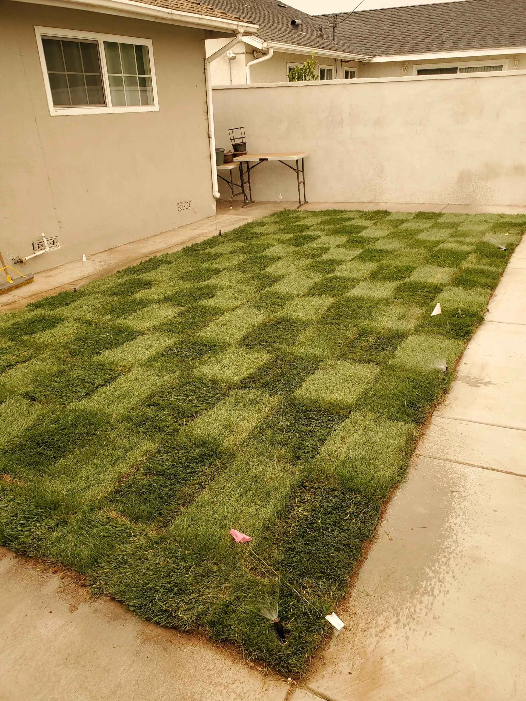
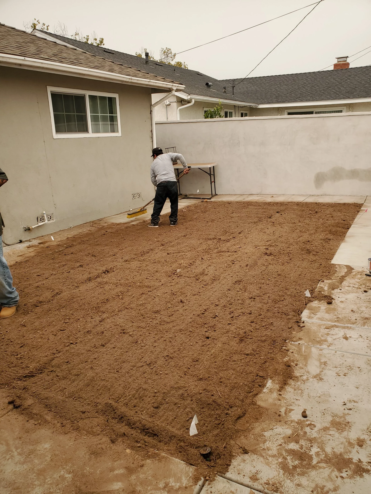
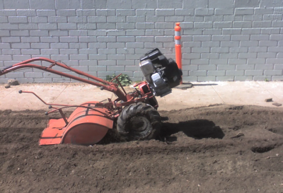

Open the soil
Pick-axe first, then rototill to loosen the top 6 to 8 inches.
Licensed CA contractor #974733 · Los Angeles County
RototillerGuy builds lawns from the root zone up: pick-axe, rototill, compost, then till again.

The method
Most lawn pages talk about a green finish. RototillerGuy talks about the layer underneath it.
The company says its crew pick-axes 6 to 8 inches deep, rototills, spreads a 3 inch layer of organic compost, then rototills again so the compost reaches the root zone.
Pick-axe first, then rototill to loosen the top 6 to 8 inches.
Spread organic compost where grass, beds, and vegetables can use it.
Till again so the soil amendment is mixed through the root zone.
Lay sod, repair sprinklers, and help the new lawn survive.

Soil opened and prepared before the lawn goes in.
Finished sod with irrigation markers still in place.
Services
The useful stuff is grouped by what homeowners usually need: a new lawn, working water, or better soil before planting.
New lawn installation, grass sod installation, lawn renovation, and prep for fresh growth.
Sprinkler installation, repairs, heads, valves, irrigation upgrades, and watering questions.

Rototilling, soil preparation, compost delivery, flower beds, and vegetable gardens.
Customer proof
RototillerGuy’s site points to hundreds of reviews across Google, Yelp, and other directories. The comments below are short excerpts from reviews published on the company site.
★★★★★
“He calmly talks me through everything I need to do right over the phone.”
Mary Ann M. · via Google
★★★★★
“He started telling me what I needed to do to repair the sprinkler on my own.”
James C. · via Google
★★★★★
“His bid was a good deal lower than the other two I had obtained.”
Scott S. · via Yelp
Get a bid
Use the estimate form or call the nearest listed number. The company says it is available every day from 07:00 to 19:00.
Lawn installation, sprinkler repair, rototilling, compost, waterlines, and planting beds across Los Angeles County.